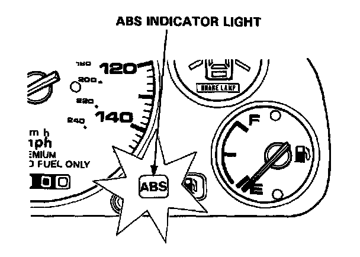
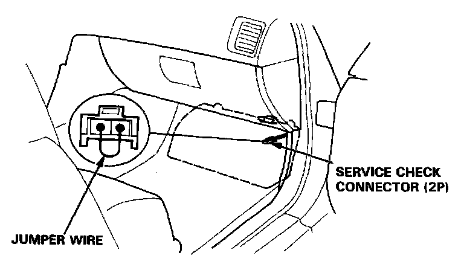
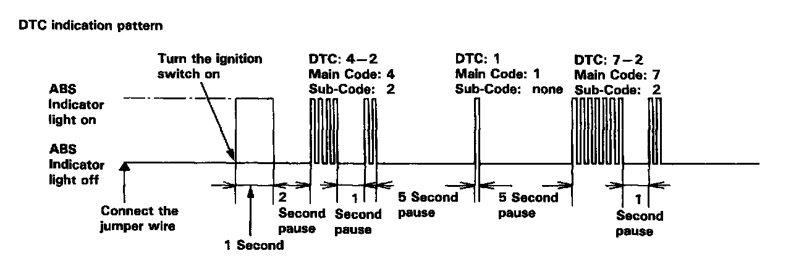

Reading and Clearing Diagnostic Trouble Codes
Diagnostic Trouble Codes (DTCs):Comes on and remains on while running:
1. Stop the engine.
2. Turn the ignition switch on and make sure that the anti-lock brake system indicator light comes on.

3. Restart the engine and check the anti-lock brake system indicator light.
- There is no problem in the anti-lock brake system if the anti-lock brake system indicator light goes off.
- Go to step 4 if the anti-lock brake system indicator light goes off and then comes back on.
4. Stop the engine.

5. Disconnect the service check connector from the connector cover located under the glove box. Connect the two terminals of the service check connector with a jumper wire.
6. Turn the ignition switch on, but do not start the engine.
7. Record the blinking frequency of the anti-lock brake system indicator light. The blinking frequency indicates the problem code.
CAUTION: Before starting the engine, disconnect the jumper wire from the service check connector, or else the Check Engine light will stay on with the engine running.

NOTE:
- The ABS control unit can indicate three DTCs (one, two or three problems).
- If the ABS indicator light does not light, see Troubleshooting of ABS Indicator Light Circuit. Initial Inspection and Diagnostic Overview
- If you miscount the blinking frequency, turn the ignition switch off then on to cycle the ABS indicator light again.
- After the repair is completed, disconnect the ABS B2 (15 A) fuse in the under-hood ABS fuse/relay box for at least three seconds to erase the ABS control unit's memory. Then turn the ignition key on again and recheck.
- The memory is erased if the connector is disconnected from the ABS control unit or the ABS control unit is removed from the body.
- After recording the main and sub-code (if applicable), refer to the Symptom-to-System Chart. DTC List - Antilock Brake System